Sin juntas o casi
Microcemento continuo o porcelánico de gran formato. Menos juntas significa menos moho, menos silicona que renovar y un aspecto mucho más limpio.
[ +20 AÑOS DE OFICIO ] ERMUA · EIBAR · COMARCA
¿Vas a reformar el baño y sospechas que detrás del azulejo hay una bajante de fibrocemento? Hakim se encarga de todo en una sola obra: abre la pared, coordina la retirada con empresa autorizada RERA, instala la bajante nueva y te entrega un baño limpio, sin apenas juntas y fácil de mantener.
Presupuesto exprés: manda 3 fotos (baño completo, ducha o bañera y la zona de la bajante) y te orientamos antes de la visita.
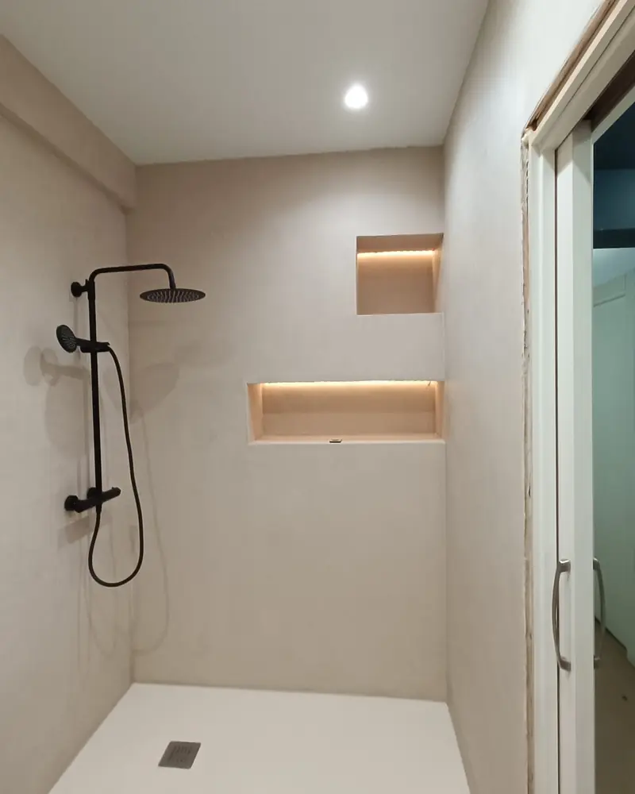
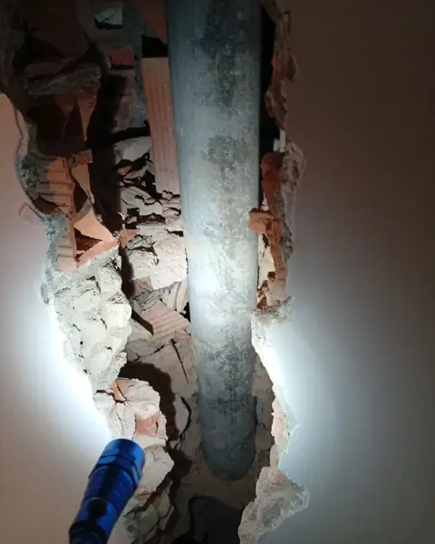
En muchos pisos de Ermua, Eibar y Durango, la bajante general pasa por el baño escondida en una mocheta. Hasta que no se pica la pared no se sabe en qué estado está. Si quien hace tu reforma no está preparado, la obra se para o, peor, se toca el fibrocemento sin protección.
Albañil, empresa de amianto y fontanero sin coordinar: semanas de retraso y el baño a medio hacer.
Cortar, perforar o romper fibrocemento libera fibras de amianto. Solo puede manipularlo una empresa inscrita en el RERA.
Alicatar encima de una bajante deteriorada deja dentro de la pared un conducto viejo que puede fallar y obligarte a romper el baño nuevo.
Ya que se abre la pared, se hace bien: instalaciones nuevas por dentro y un acabado sobrio, sin recovecos, que se limpia en minutos.
Microcemento continuo o porcelánico de gran formato. Menos juntas significa menos moho, menos silicona que renovar y un aspecto mucho más limpio.
Impermeabilización bajo el plato y en la zona de ducha antes de revestir, con pendientes y desagües revisados. El agua va donde tiene que ir.
Bajante de PVC en lugar de la de fibrocemento y saneamiento de las tomas accesibles. Lo que no se ve también queda renovado.
Inodoro suspendido para fregar el suelo de un pase, plato extraplano de resina y hornacinas empotradas en lugar de estantes.
Líneas rectas, tonos neutros y grifería vista en negro o cromo. Un diseño que no pasa de moda en diez años.
Duchas a ras de suelo y platos antideslizantes. Ideal si piensas en tus padres o en el futuro de tu vivienda.
Estas fotos son de una misma obra real en Ermua. Sin renders: lo que ves es lo que pasa en tu casa.
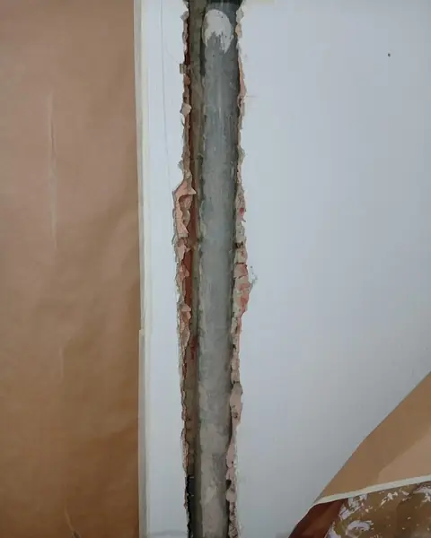
Empapelamos la estancia y abrimos la mocheta a mano, sin golpear ni cortar el conducto de fibrocemento.
Lo hace: Hakim
Revisamos tramos y uniones y fijamos fecha con la empresa autorizada para que el corte de servicio sea mínimo.
Lo hace: Hakim
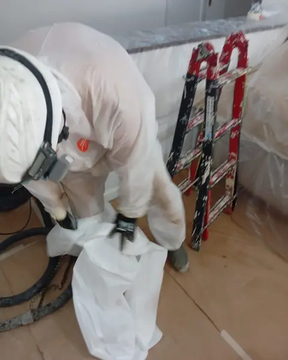
Desmontaje con EPI, zona confinada, ensacado hermético y traslado del residuo a gestor autorizado.
Lo hace: empresa RERA (coordinada por nosotros)
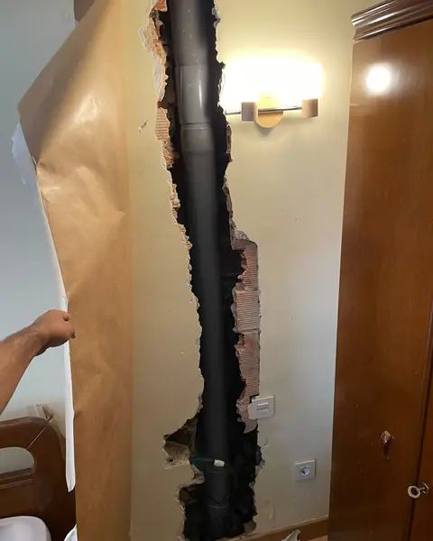
Instalamos la bajante de PVC, cerramos la mocheta y seguimos con revestimiento, plato y sanitarios.
Lo hace: Hakim
Fotos hechas en obra con el móvil, sin retoques ni imágenes generadas. Pulsa cualquiera para ampliarla.
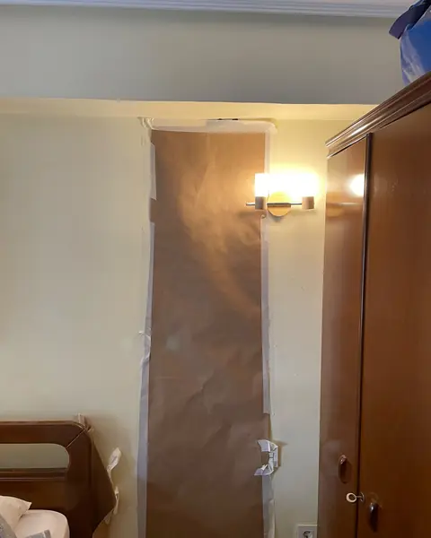
Secuencia de una misma vivienda en Ermua: de la bajante de uralita a la mocheta cerrada, lista para revestir.
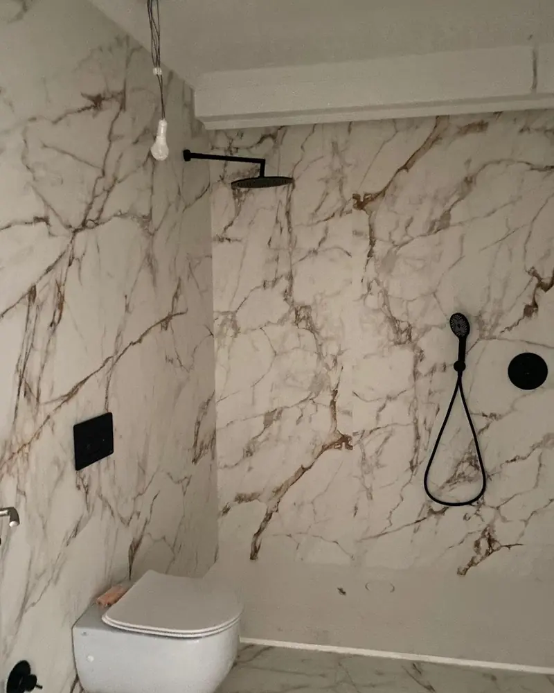
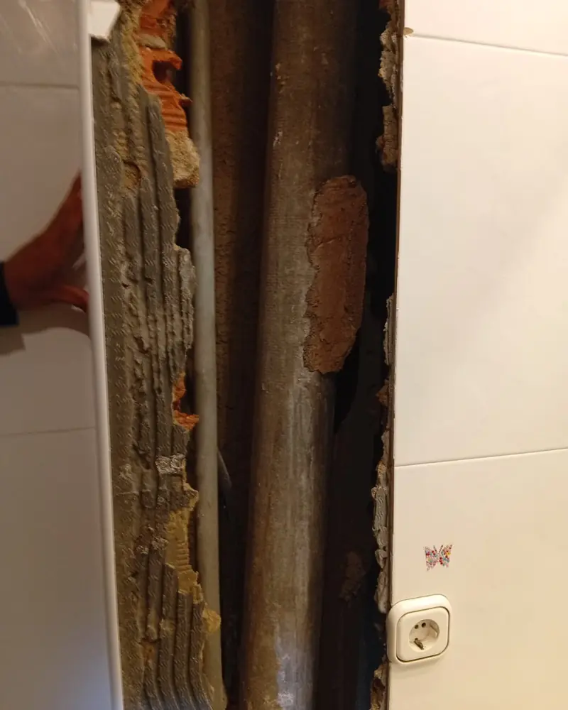
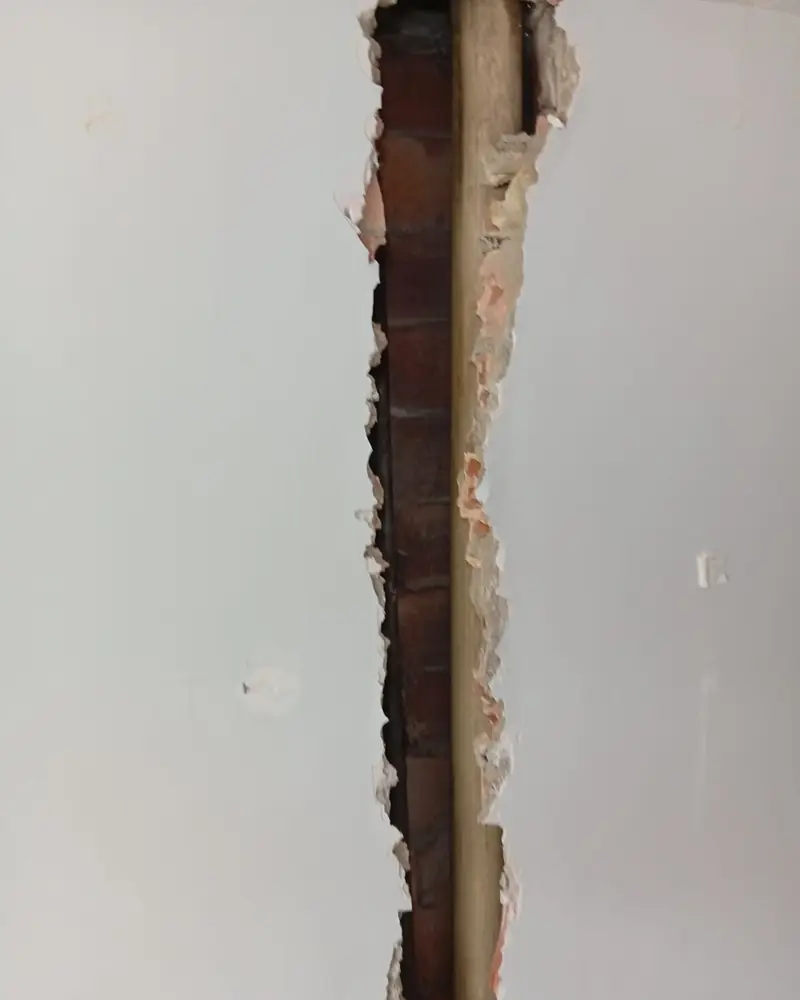
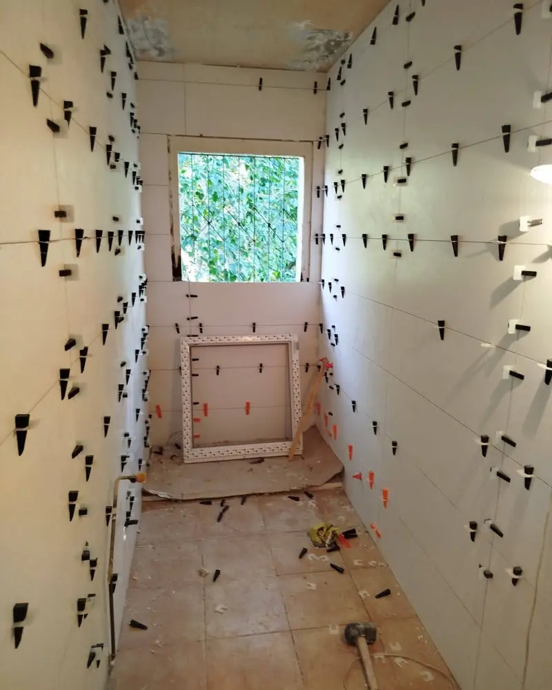
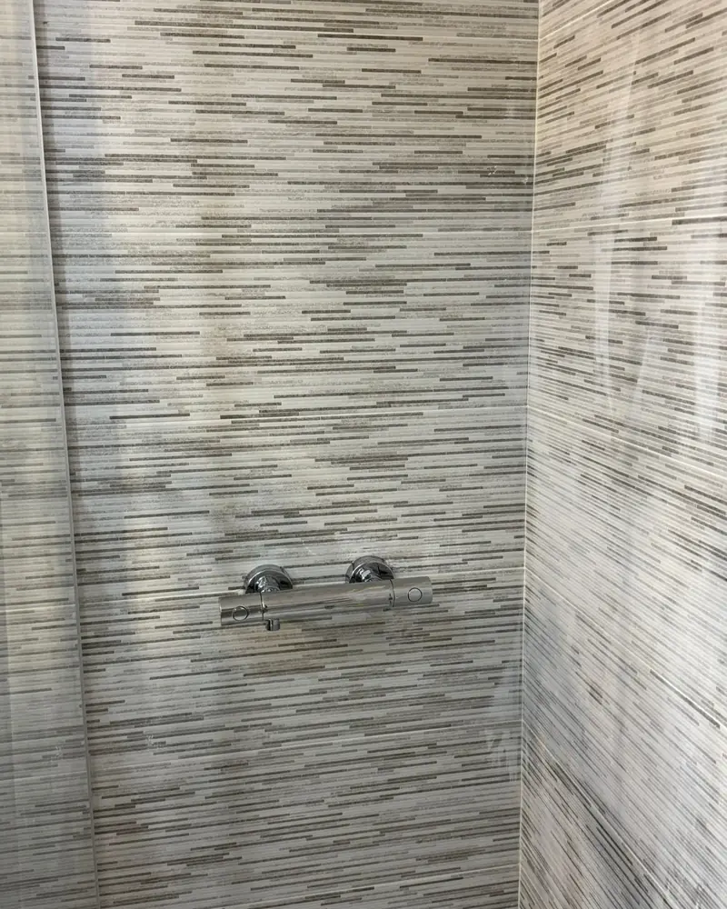
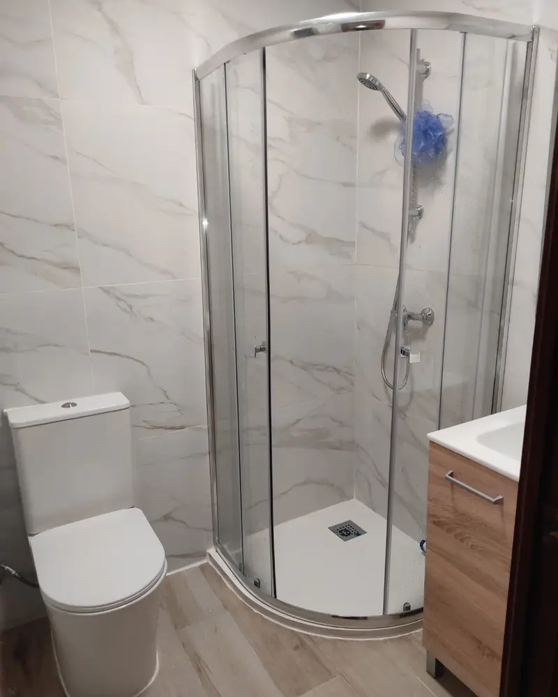
Tras la visita recibes el alcance, los materiales y el precio detallados. Sin partidas sorpresa a mitad de obra.
Retirada solo por empresa inscrita en el RERA, con plan de trabajo aprobado y documentación de gestión del residuo.
Sin comerciales ni subcontratas encadenadas. Hablas siempre con quien ejecuta y supervisa cada fase.
Garantía por escrito de los trabajos de albañilería y fontanería ejecutados.
"Cambiamos la bañera por ducha y quedamos impresionados con el cuidado que pusieron. No solo instalaron el plato, sino que sanearon las tuberías antiguas que estaban dando problemas y dejaron todo rematado a la perfección. Trato inmejorable."
"Hakim reformó por completo el baño de nuestros padres en Eibar. Se adaptó a sus necesidades de accesibilidad, asesorando con honestidad y sin intentar vender de más. Muy limpio, puntual y profesional. Un acierto total."
Sí. Es muy habitual en edificios de Ermua y Eibar construidos entre los años 60 y 90. Abrimos la mocheta con cuidado, coordinamos la retirada del fibrocemento con una empresa autorizada inscrita en el RERA, instalamos una bajante nueva de PVC y continuamos con la reforma del baño hasta dejarlo terminado.
La retirada la ejecuta siempre una empresa inscrita en el Registro de Empresas con Riesgo de Amianto (RERA), con plan de trabajo aprobado por la autoridad laboral según el Real Decreto 396/2006. Nosotros la coordinamos y nos encargamos de toda la albañilería y fontanería de antes y después.
Si el fibrocemento está en buen estado y nadie lo toca, no libera fibras. Pero en una reforma de baño se pica, se perfora y se conectan desagües justo en esa zona. Manipular fibrocemento sin empresa autorizada está prohibido y puede liberar fibras de amianto, por eso lo correcto es sustituir el tramo afectado.
La bajante general suele ser un elemento común del edificio, así que conviene informar a la comunidad o al administrador de fincas antes de actuar. Te asesoramos sobre qué comunicar y coordinamos las fechas para que el corte del servicio a los vecinos sea mínimo.
Las dos opciones más limpias son el microcemento, que crea una superficie continua sin juntas, y el porcelánico de gran formato, que reduce las juntas al mínimo. Se combinan con plato de ducha extraplano de resina, inodoro suspendido y hornacinas empotradas para eliminar estantes y facilitar la limpieza.
Depende de los metros del baño, del acabado elegido y del tramo de bajante afectado. La retirada de amianto requiere además un plan de trabajo aprobado antes de empezar, lo que añade plazo administrativo. Hakim visita la vivienda sin compromiso y entrega una propuesta por escrito con precio y calendario.
L–V 8:00–20:00 · Sáb 9:00–14:00 · Calle San Isidro 13, 48260 Ermua